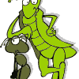

Când era mic, nişte părinţi inconştienţi i-au băgat în cap băiatului regula celor patru C: în viaţă trebuie să fii cuviincios, conştiincios, corect şi competent. Aşa s-a “c-c-it” prin şcoală, adunând note de 10, premii la olimpiade, plus nenumărate înjurături de la colegii mai puţin cuviincioşi şi deloc conştiincioşi. Bonus, la ofertă, doi dinţi sparţi din partea unui şmecher care îl avertizase pe tocilar în câteva rânduri să nu “se mai dea deştept”.
Competenţa
A luat Bacalaureatul cu media 9,50. Şmecherul care se ocupase de estetica lui dentară “a luat decât media3,50″ şi s-a dus la Mamaia. Ca să se relaxeze în vederea sesiunii de toamnă. Omul nostru s-a dus acasă, să-şi pregătească admiterea la facultate.
{kind=link}
În prima zi de studenţie s-a trezit coleg de an cu vechea lui cunoştinţă. Şmecherul “se descurcase” la BAC-ul tomnatic şi intrase “la cu taxă”. Că doar liceul avea nevoie de o zugrăveală nouă şi facultatea de un cursant bun-platnic. Când au reînceput avertismentele cu privire la etalarea deşteptăciunii, băiatul nostru a lăsat-o mai moale cu partea legată de competenţă. Viaţa merge înainte şi fără ea, iar stomatologii sunt scumpi. Îi mai rămâneau trei “C“-uri de apărat.
3-1=2. Corect, dar mai bine lasă
La sfârşitul anului III, şi-a dat trei luni din viaţă ca să-şi redacteze conştiincios lucrarea de licenţă. Şmecherul a dat, în acelaşi scop, o căutare pe Google şi câteva sute de euro. Au luat amândoi nota 10. Lista valorilor deprinse de la părinţi s-a redus la două. Uite că merge şi fără corectitudine.
Muncind conştiincios
Devenit de-acum bărbat în toată firea, s-a pornit să-şi caute un loc de muncă. După vreo câteva încercări ratate din lipsă de experienţă sau de cunoştinţe (“cunoaşteţi pe cineva în firma noastră?”), soarta l-a adus din nou faţă în faţă cu bunul lui coleg, şmecherul. Acesta mai dăduse vreo câteva căutări pe Google şi vreo câteva mii de euro, aşa că acum era doctorand şi manager general la firma lu’ tăticu’, alintat şi babacu’ sponsor.
{kind=link}
“Aaa, tu eşti ăla deştept” l-a întâmpinat bucuros noul lui şef. Ştiindu-l conştiincios, l-a repartizat pe un post cu muncă multă şi bani puţini. “E criză, ce să-i faci”, i-a justificat patronul remuneraţia anemică.
Şi criza a tot durat vreme de cinci ani. Omul şi-a predat proiectele la timp, şi-a respectat orarul de lucru, ba chiar s-a băgat la ore suplimentare. Problema e că atunci când munceşti prea mult, nu mai ai timp să faci bani. Colegii lui mai puţin preocupaţi de termenele-limită şi mai atenţi la “cum se învârt treburile” căpătau ba câte o primă, ba câte un comision, ba câte o avansare. El căpăta doar mai multe sarcini, “că doar eşti un tip conştiincios”. S-a hotărât să mai taie un C de pe răbojul bătrânesc.
Ce faci cu lista pentru ăla mic
Greu a mai deprins “mersul lucrurilor”, “descurcăreala” şi “învârteala”. Cu aşa un start întârziat, nu-i de mirare că a rămas tot locatar la bloc, conducător de Logan şi turist pe Valea Cerbului.
Într-o zi, în timp ce urmărea la Ştiri declaraţiile fostului său coleg de şcoală, proaspăt ales parlamentar, nevasta gravidă îl îndemnă să întocmească şi ei o listă de calităţi pe care să le inoculeze viitorului vlăstar al familiei. “Să mă C…C pe ea de listă”, izbucneşte capul familiei. Între timp renunţase şi la buna-cuviinţă.
Comments on this entry are closed.